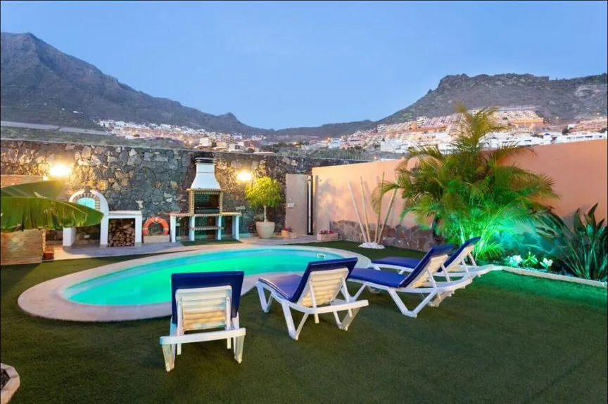
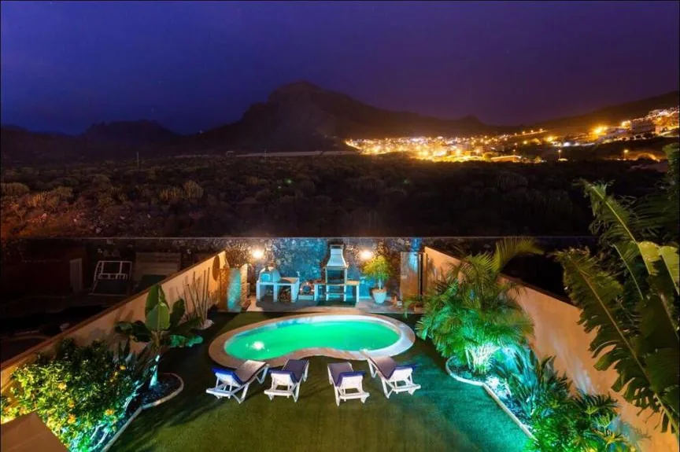
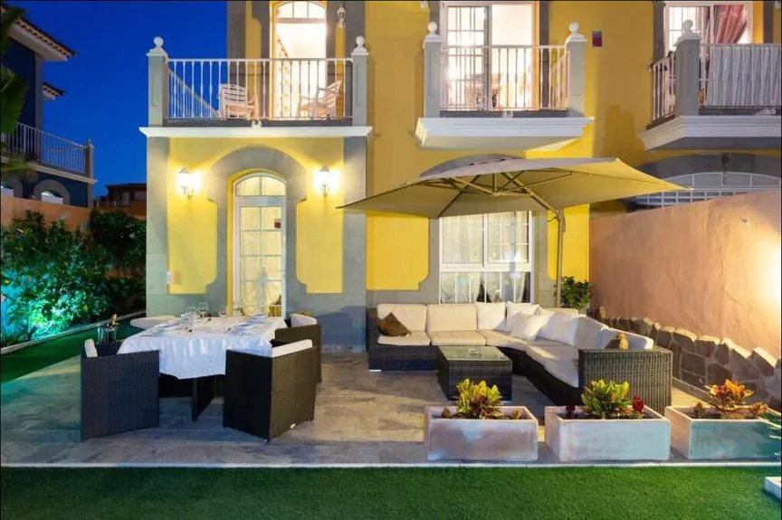
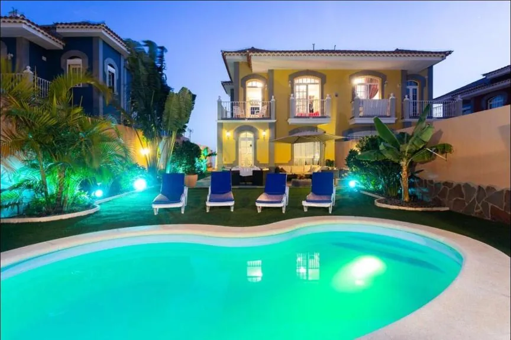
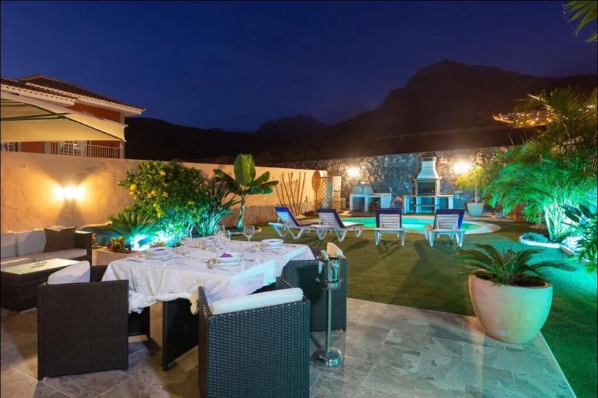
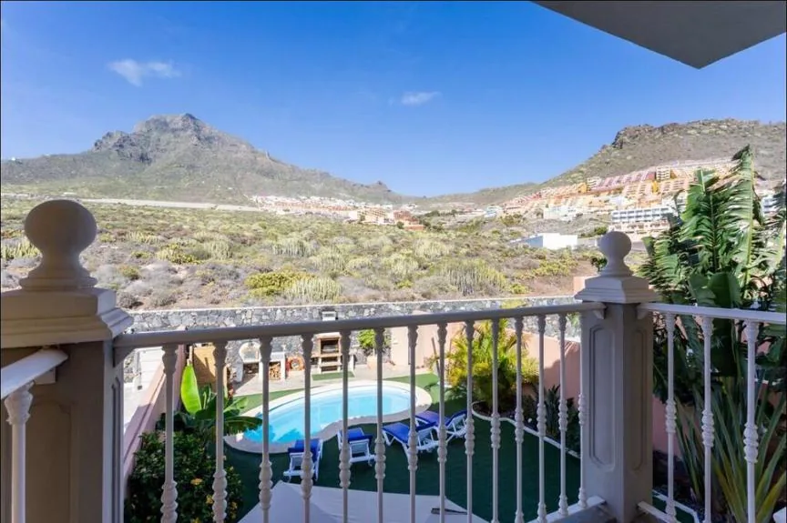
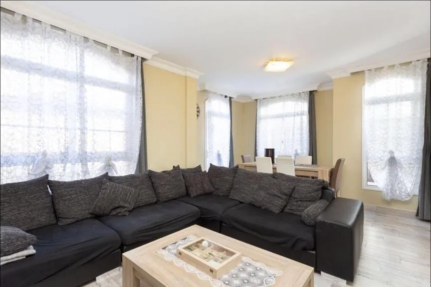
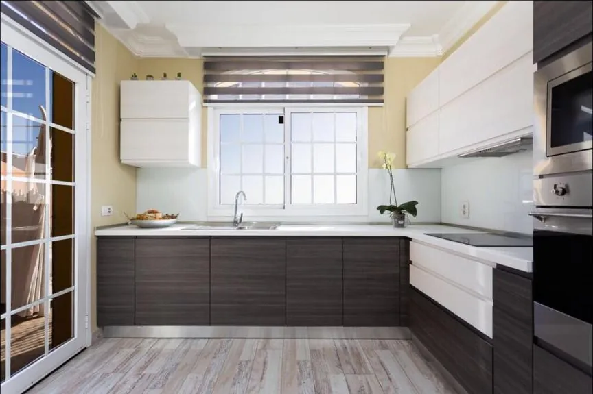
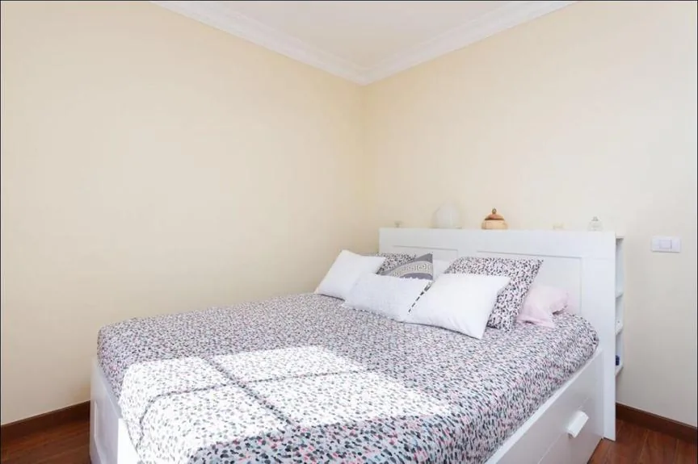
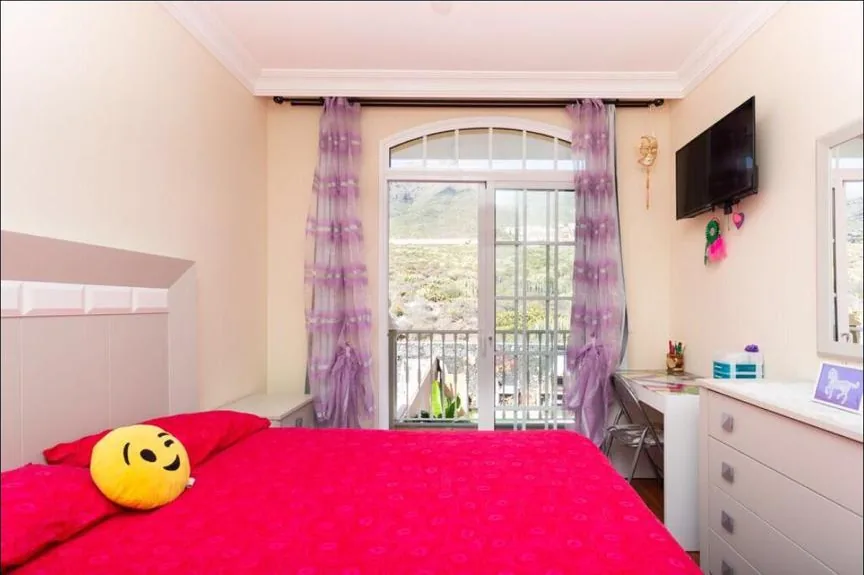
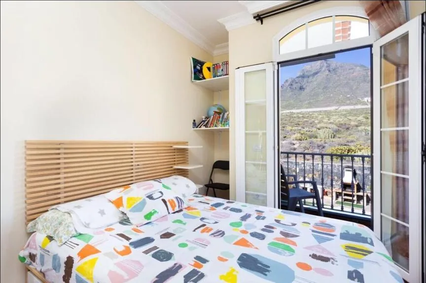
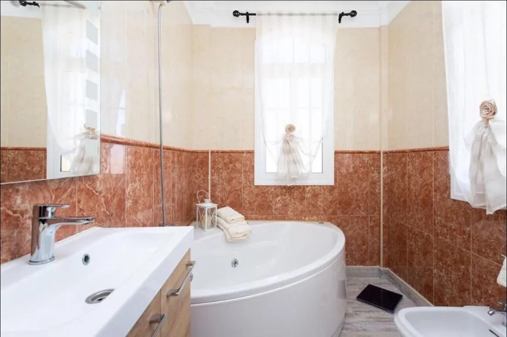
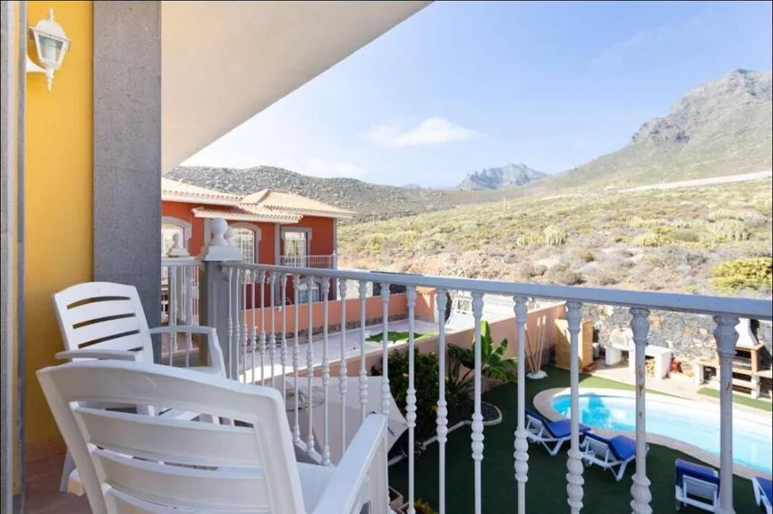
Villa Lady Luxury si trova a Costa Adeje, la zona più esclusiva del sud di Tenerife, e ospita fino a 6 persone in 3 camere da letto con 3 bagni. La giornata gira intorno alla piscina privata, al giardino e alla terrazza attrezzata per pranzare e cenare all'aperto.
Dalle terrazze ai piani superiori lo sguardo corre dalle montagne di Adeje fino al mare: la sera, con la piscina illuminata e le luci della costa, la villa dà il meglio di sé. Interni luminosi, ampio soggiorno e cucina completa per vivere la casa in autonomia.
Per chi vuole una villa privata a Costa Adeje con piscina tutta per sé, spazio per sei e una vista che cambia con la luce del giorno.
Contattaci per disponibilità e prezzi
💬 Contattaci su WhatsApp